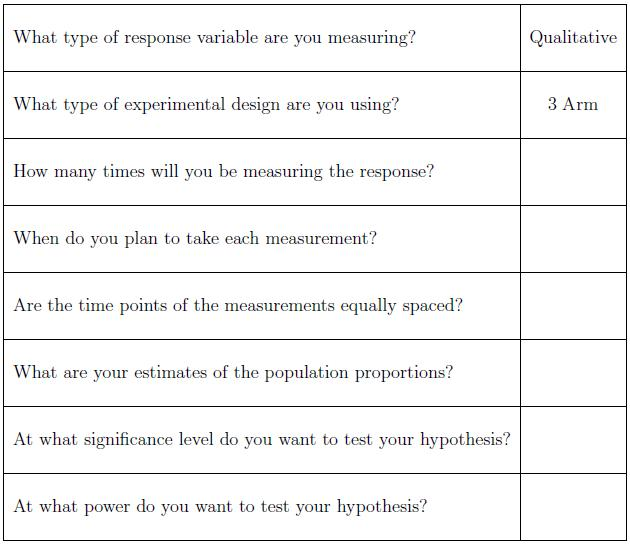

Suppose instead of disease prevention, Jill was interested in a different experiment. Jill is interested in whether or not a stimuli causes a particular behavioural response in mice. Each mouse will be subjected to the treatment (stimuli or nothing) several times and each time Jill will record whether or not the response occurs. Thus this is a repeated measures experiment.
Let's summarize what we know so far. Jill is taking independent random samples from her target population of mice. Then she records whether or not a response occurs in each mouse at several time points. The sample size formula for this type of design is much more complicated. Hence it is our recommendation that Jill schedule a consultation with a statistician. Some things that Jill should think about and some information that she will need prior to her consultation are provided in the following checklist.

-- ErinEsp - 13 Mar 2010